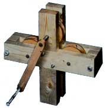
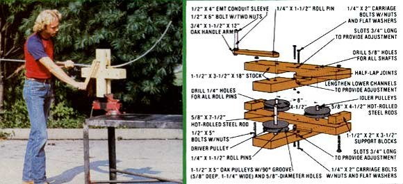

Beat the cost of custom conduit shaping by building . . .
If you've already read the backyard greenhouse article on page 80 of this issue, you know that one of the tools required to build the little "sun shed" is a tubing roller. Now such a device-if purchased-could cost you several hundreds of dollars, because it's normally a motor-driven "professionals only" machine.
A roller is used to shape lengths of standard conduit or electrical metallic tubing (EMT) into arcs (rather than merely to form a corner, as is the case with the far more common tube bender) for use in framing, toolmaking, and other kinds of fabrication. On several occasions MOTHER's shop crew has felt a sore need for one of the handy implements . . . so finally they just up and built their own "North Carolina copy", which fills the bill perfectly!
HERE'S HOW IT WORKS
Most store-bought tube-shapers run on electricity. Our version, though, uses a handcrank that not only feeds the conduit through swiftly and easily, but costs nothing to operate. The tool works like this: The bender itself is simply a pair of crosses-each made of two 18-inch long 2 X 4's-that "sandwich" a set of three grooved pulleys and a pair of support blocks. Two of the wheels (those that are in line along the same crosspiece) serve as idlers ... and the third pulley (positioned at one end of the other crosspiece) is the driver.
When the straight conduit is placed between the driver and the left idler, and the crank is turned, the tubing moves along until it contacts the right idler, which forces the pipe to bend slightly (see the photo below) and to continue to bend till the entire section is arced. (This happens, of course, because the driver is positioned close enough to the idlers to force the conduit to bow.)
AND IT'S EASY TO BUILD!
The only tools you'll need in order to make this inexpensive device are a drill with an assortment of bits, a couple of wrenches, and a table saw with adjustable fence and blade height. Start by locating a good piece of 3/4" seasoned oak that's at least 5" wide and 30" in length. (While you're at it, find-or plan to cut from the first board, if it's large enough-another section measuring 3/4-inch X 1 1/2-inch X 12 inches . . . which will become the arm of the turning handle.)
Next, cut the plank in half and glue the two sections together so that-when it dries-you'll have a single piece of wood about 1 1/2 inches thick ... from which you'll cut three 5" X 5" pulley blanks. To do so, set your saw fence 5 inches from the blade and-beginning with a shallow cut and working progressively deeper-pass each blank through the saw, rotating the wood slightly at every pass, until the disks are perfectly round.
You can use the same method to form the grooves in the pulleys. Tilt the saw blade at a 45° angle, then set your fence 1 1/2 inches from its near side. Raise the blade 1 inch from the table (measured along the toothed disk's side), and pass the edge of the wheels through it. When the incision is complete around the entire circumference, turn the wooden circle over and cut the opposite side of the groove. (WARNING: During all of the foregoing sawing procedures, be extremely careful ... remember, your fingers will be very close to the area being cut!)
Trim the rest of the wooden components from a 76" length of 2 X 4, round the ends of the oak handle arm, and cut half-lap joints in the center of your crosses . . . then refer to the illustration provided for aid in assembling the roller. (NOTE: The critical measurements are [1] the 8-inch center-to-center distance between the two idler pulleys, and [2] the 4 1/2-inch span from the axis of the drive wheel to the midpoint of that 8-inch centerline.)
BUT THAT'S NOT ALL. . .
This little gadget can't be beat for bending the support ribs on our "shoestring" greenhouse. What's more, if you take a tip from MOTHER's Emerson Smyers, you can use the tool to perform any number of other tube-shaping chores: "Lengthen the channels in the lower section of each cross," Emerson says, "and slot the 1/4" mounting holes so the drive pulley can be moved closer to or farther from the others but can still be locked in place where desired. You can then produce just about any kind of arc . . . even those required for large parabolic mirror frames!"
|
 |
 |
|